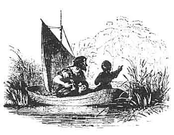
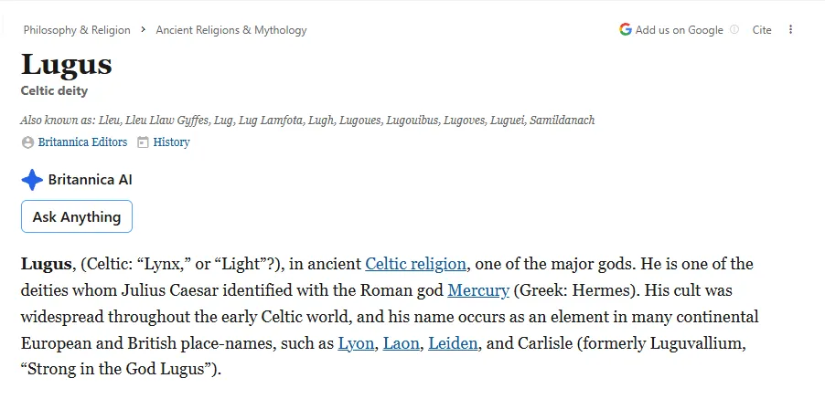
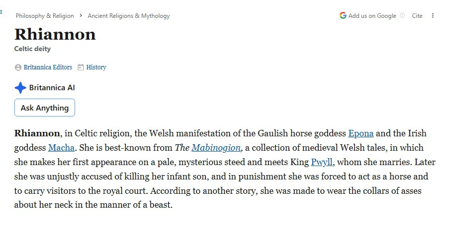

“동일시”

“루 라와다와 레이 라우 거페스는 루구스와 동일시된다.”
“리아논과 에포나는 같은 여신이다.”
유독 켈트 신화가 얽히면 이런 서술을 매우 자주 보게 됩니다.
물론 현대를 살아가는 작가님의 상상을 한껏 펼치는 건 아주 좋은 일입니다. 그러나 “실제로 그랬다”고 단정한다면 저는 강력하게 반대하며 오류라고 단언하겠습니다.
유형 1: 같은 기원, 같은 신격?
다시 한 번 이 문장을 보시죠.
“루 라와다와 레이 라우 거페스는 루구스와 동일시된다.”
루 라와다Lugh Lámhfhada는 아일랜드 신화에 등장하는 인물입니다. “라와다”란 “긴 팔”을 뜻하는데, 그의 다재다능함을 상징하는 것으로 흔히 풀이됩니다. «마이 티랴의 두 번째 싸움»에서는 사울다나흐samhaildánach, 즉 “모든 기예에 골고루 통달한 자”라는 별명으로도 언급됩니다.
같은 문헌에서, 포보리Fomhóraigh 일족1과의 전쟁을 앞둔 투아하 데 다난Tuatha Dé Danann2의 대왕 누아Nuadha3는 루의 엄청난 재능을 보고 그에게 왕위를 선양합니다. 루는 누아가 건 기대에 걸맞게 마이 티랴Maigh Tuireadh4의 싸움에서 군주 발로르Balor5가 이끄는 포보리 일족을 멋지게 격파합니다.
한편 레이 라우 거페스Lleu Llaw Gyffes는 웨일스의 산문 문학 «마비노기»에 등장합니다. 그 이름은 “솜씨 좋은 손을 가진 밝은6 자”를 뜻합니다.
레이는 어머니 아리안로드Arianrhod에게 태어나자마자 버려지고7, 아리안로드의 형제이자 놀라울 만큼 뛰어난 환술사인 그위디온Gwydion과 함께 자랍니다. 그위디온이 소년이 된 레이를 데리고 아리안로드를 찾아갔지만, 되려 내다버린 아들을 미워한 어머니에게 저주를 뒤집어쓰죠. 그위디온의 꾀와 환술로 레이에게 걸린 세 저주를 깨부수는 것이 이 «마비노기»의 중반부 줄거리입니다.
이 두 이야기의 공통점은? 네, 보시다시피 거의 없습니다. 전혀 다른 서사 속에 존재하는 전혀 다른 인물에 불과합니다.

그러나 이 둘을 동일시하는 시선은 너무나도 뿌리깊게 박혀 거두기 어려울 지경이 되었습니다. «브리태니커 백과사전»마저도 이 둘을 “아일랜드와 웨일스 전통에서 다른 이름으로 부르는 같은 존재”로 취급합니다.
그리고 그 근거는 순환 논증을 제외하면 단 하나, 이름의 어원이 같다는 사실입니다. 바로 로마 문헌과 대륙 고고학 자료에 기술된 고대 갈리아 남신, 루구스Lugus와 결부되지요.
“루구스”라는 이름이 게일어 Lugh← Lug, 웨일스어 Lleu로 연결되는 것은 언어학적으로 확실합니다. 유명한 켈트학자 존 리스John Rhŷs 1840 – 1915가 이 실마리를 바탕으로 루와 레이의 연관성을 지적하였지요. 윌리엄 존 그리피드William John Gruffydd 1881 – 1954는 앞선 «마비노기»를 “해부”하여 “원형”을 이끌어내려고 시도하였습니다.
결론적으로, 이 두 시도는 현대에는 모두 기각됩니다.
루와 레이와 루구스를 원시 인도유럽어 *leuk “빛”과 연결하여 “빛의 신”, 더 나아가 “태양신”으로 해석하는 시도는, 언어학 이론이 정교해지며 “*leuk는 절대 Lugh, Llew, Lugus로 변형될 수 없다”는 결론으로 끝났습니다.
고전 문학을 해체하여 순수한 원형을 복원하려는 시도는, 현대에는 태피스트리의 씨실과 날실을 풀어헤쳐 순수한 씨실만으로 구성된 “원본”을 복원하겠다는 시도와 같은 것으로 여겨집니다.
루와 레이, 더 나아가 문헌 자료조차 거의 없어서 정체를 알 수 없는 루구스를 “동일시”하려는 시도는 어원 일치라는 빈약한 근거에서 출발했습니다. 어원이 같으니 신화와 서사도 같으리라는 비약이었죠.
그리스 신화를 다루며 “제우스와 유피테르는 어원이 같으니 동일한 신”이라고 말한다면 즉시 비난의 철퇴가 떨어질 것입니다. «브리태니커 백과사전»이 “제우스”와 “유피테르”를 “*Dyēus8, also known as Zeus and Jupiter”라고 서술하며 *Dyēus 기사의 하위 단락으로 리다이렉트하였다면 전세계의 비웃음을 샀겠죠.
안타깝게도 켈트 신화에 관하여서는 여전히 과도하게 너그러운 “동일시”가 용인되고 있습니다. 게일과 브리튼과 갈리아를 구분하지 않고 “범 켈트”로 묶는 19세기식 켈트 낭만주의가 아직 우리의 인식을 지배하고 있습니다.
유형 2: 같은 모티프, 같은 신격?
“리아논과 에포나는 같은 여신이다.”
유형 1과 크게 다르지 않지만, 이번에는 이름이 아니라 도상적 모티프에서 출발합니다. 바로 말馬의 여신이라고 알려진 리아논과 에포나의 사례입니다.
리아논Rhiannon은 마찬가지로 «마비노기»에 등장하는 인물입니다. 웨일스 남서부 더베드Dyfed 왕국의 왕후이지요. 왕 프윌Pwyll의 눈앞에 절대 따라잡을 수 없는 말을 탄 모습으로 처음 나타나서 연애하고, 고생 끝에 결혼합니다.
에포나Epona는 갈리아 고고학 자료에 자주 등장하는 여신입니다. 말을 탔거나, 말과 함께 있거나, 어쨌든 말과 관련된 도상으로 수백 점의 유물이 전하지요. 에포나에 관한 문헌은 극도로 빈약하기에 이 이상으로 유의미한 정보는 거의 모두 추론과 상상의 영역에 속합니다.

마찬가지로 우리의 «브리태니커 백과사전»은 이 둘을 동일시합니다. 동일시하다 못해, 그냥 “리아논은 에포나의 웨일스적 발현”이라고 단언하기까지 합니다.
이토록 자신 있게 고대 대륙의 정체불명 여신과 14세기 섬 문헌에 나오는 왕후를 동일시하는 근거는 오직 하나, 말입니다.
윌리엄 오언 퓨William Owen Pughe, 1759 – 1835가 처음으로 리아논이 여신이라고 가정하였으며, 에드워드 안윌Edward Anwyl, 1866 – 1914은 이를 확장하여 “리아논은 말의 여신”이라고 주장하였습니다. 악명 높은 날조꾼 욜로 모르가누그Iolo Morganwg, 1747 – 1826가 창시한 신이교주의는 이 인식을 더욱 키웠습니다.
리아논에 관한 문헌 자료는 «마비노기»가 거의 유일하다시피합니다. 에포나에 관하여 어떤 서사가 있었는지는 전혀 알 수 없습니다. 1000년과 500킬로미터의 간극을 가진 이 두 인물을 오직 “말을 탔다” 단 하나를 근거로 동일시하는 것은 명백한 비약입니다.
애초에 신이긴 한가?
지금까지 루, 레이, 리아논, 에포나를 사례로 무분별한 동일시를 지적해 보았는데요, 아직 다루지 않은 논의가 또 있습니다. 애초에 그들이 신이었는지 자체가 회의하여 마땅한 논제입니다.
이들 가운데 루 라와다에게는 옛 신이었을 가능성을 시사하는 비교적 탄탄한 증거가 있습니다. 일단 민족부터가 “신족”이고, 루 이외의 다른 신족에게도 “신들의 어머니”, “시인의 여신” 같은 몇몇 “신” 지칭이 남아 있습니다9.
그러나 웨일스 쪽으로 오면 얘기가 달라집니다. 그 어떤 문헌도 레이를 가리켜 “신”이라고 부르지 않습니다. 루가 신이었으니 루와 동일시되는 레이도 신이었을 것이라는 추론은, “동일시”라는 고리를 깨면 설득력을 잃습니다.
루, 레이 이외에도 켈트 문학에 등장하는 온갖 인물을 가리켜 우리는 무분별하게 “신”이라고 부르고는 합니다. 앞서 언급한 그위디온과 마스도 “남신”, 아리안로드와 리아논도 “여신”으로 널리 알려져 있습니다.
그러나 그위디온은 원문에서 환술사lledrithiog 내지는 이야기꾼cyfarwydd일 뿐이며, 아리안로드는 그냥 아리안로드입니다.
이 모든 신성화는 그 어떤 문헌으로도 검증되지 않았음을 반드시 짚고 싶습니다.
신이었으나 강등당하였다?
리스, 오언 퓨, 그리피드 등 19-20세기의 켈트학 계보와 이를 그대로 답습한 서적, 그리고 수많은 인터넷 서술에서 거의 정설처럼 여기는 주장입니다.
켈트 문학의 등장인물들은 본래 신이었으나, 기독교가 사회를 지배하는 과정에서 인간 마법사로 격하당하였고, 현전하는 문헌은 기독교인이 기독교의 절대적 영향 하에서 저술하였으므로, 기독교적 부분을 정제하여 원형을 되찾을 수 있다(더 과격하게는, “되찾아야 한다”)는 내용이 이러한 주장의 골자입니다.
실제로 이러한 격하는 기독교를 받아들인 지역에서 매우 흔히 발생하였습니다. 에우헤메로스주의Euhemerism, 즉 “이교 신은 특출난 역사 인물을 신격화한 존재”라는 사상에 입각한 서술이지요.
이를테면 «에린 침략의 서»는 투아하 데 다난을 “북방에서 배10를 타고 침략한 마법에 능한 민족”으로 서술하는 전형적인 에우헤메로스주의적 서사를 취합니다.
그러나 외부 증거 없이 이러한 격하가 일어났다고 주장할 때 문제가 발생합니다. 루 라와다와 투아하 데 다난은 여러 중세 문헌에서 신적 표지와 인간적 표지를 동시에 현출하지만, 레이 라우 거페스는 전혀 그렇지 않습니다. «마비노기»에서 레이가 능동적으로 행사하는 초자연적 권능은 극소수이며, 이는 처음부터 신이 아닌 마법사였다고 주장하더라도 모순이 없는 수준입니다.
이교 신 격하설은 가끔 검증도 반증도 불가능한 주장으로 전용되기도 합니다. 루 라와다처럼 “신이다” 하는 서술이 있으면 신이었다는 증거이며, 레이처럼 그러한 서술이 없으면 “격하된 뒤 자료마저 말소되었다”는 증거가 되지요.
개인적으로, 외부 증거로 검증도 반증도 불가능한 주장은 경계하여 마땅하다고 생각합니다.
한편 “원형을 되찾는다”가 무의미한 이유는 앞서 태피스트리 비유로 설명하였습니다. 현전하는 켈트 고전 문학은 기독교와 매우 깊이 융합하여 분리할 수 없습니다.
태피스트리를 구성하는 실 하나하나를 분석할 가치는 차고 넘칩니다. 그러나 그중 일부를 취사선택하여 “순수한 이교 그림”을 다시 짜는 기획은 무의미하며, 심지어 “순수한 이교 실”이 존재하기는 하였는지조차 알 수 없습니다.
- 1아일랜드 인근의 작은 섬들을 점거하였다고 하는 기괴한 족속. «에린 침략의 서»에 따르면 먼 옛날 파르홀론Partholón 시대부터 아일랜드인과 앙숙이었습니다. 온라인 게임 «마비노기» 덕분에 “마족”으로도 잘 알려져 있죠. 이들에 관하여서는 나중에 따로 다룰 기회가 있을 것 같습니다.
- 2“다나(?)의 신족”. 이름 그대로 아일랜드 신화의 신족입니다. 중세 이후의 민간 전승에 따르면 이들이 퇴락하여 이스 시aos sídhe, 곧 “요정”이 되었습니다.
- 3일본식 독음을 그대로 옮겨 온 “누아자”로 알려져 있습니다. 은 의수로 유명하죠.
- 4아일랜드 서부 코나흐타Connachta 지방의 들판. 영어 이름 모이투라Moytura로 더 유명합니다.
- 5마법 탓에 엄청나게 부풀어오른 눈으로 유명합니다. 이 눈은 쳐다보기만 해도 곧바로 절명할 만큼 사악한 힘이 깃들어 드로훌drochshúil, 곧 사안邪眼이라고 부릅니다.
- 6“레이”가 아닌 레우Llew라고도 하는데, 이건 “사자”를 뜻합니다.
- 7레이가 태어날 때, 웨일스 북부 그위네드Gwynedd의 왕인 마스Math가 수치스러운 “처녀성” 검증을 요구했기 때문입니다.
- 8재구된 원시 인도유럽 신화의 “하늘 아버지” 남신입니다. “제우스” 및 “유피테르”의 어원이기도 하죠.
- 9이 모든 문헌을 기독교인이 기록하였다는 사실에 주목할 만합니다.
- 10“구름”이라고도 합니다. 구름이 배로 격하되는 것 또한 에우헤메로스적이죠.